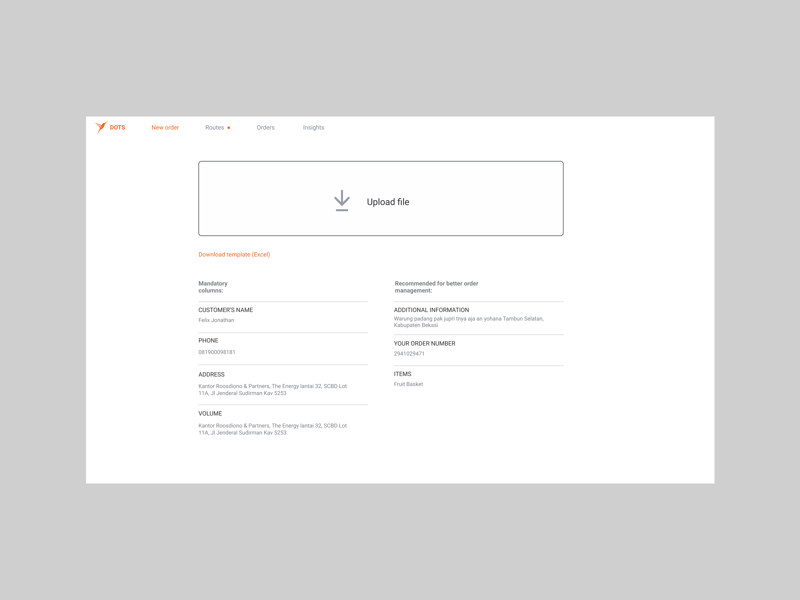
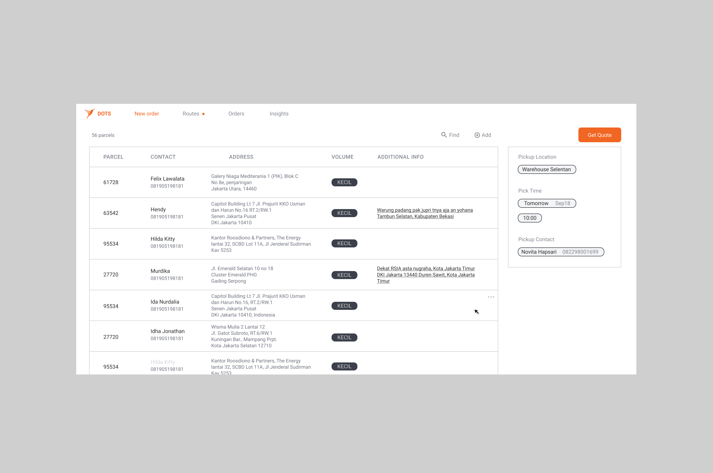

The tool that saved warehouses
Our guidelines clearly defined what text styles we use, but that wasn't enought. I n Notion We use notioBACKGROUND
Placing orders on Lalamove's consumer products is tedious for clients who need to deliver items in large volumes. Furthermore, due to lack of internal tools, platform's ability to segment price is limited. As results customers complained on high delivery costs.
Lalamove launched an experimantal tool which optimized their delivery needs by providing efficient last mile delivery routes. It was used by local teams to create routes on behalf of selected business clients. It helped to automate complex internal processes and attract customers, which otherwise wouldn't be interested in platform.
I was part of the team on intersection of product, engineering and operations. We were motivated to create functional product in the shortest amount of time. We launched after 2 months which became the fastest product launch in the company's history. Soon after its launch in Singapore and Jakarta, it contributed to 5% of all orders placed on Lalamove platform.
NEXT STEP
We relieved some of the pain that customer felt when they requested for drivers but this still wasn't enought. Our ambition was to give them more control and flexibility over their delivery experience.
We wanted to give them self-serviced tool which places their orders efficiently without involving Lalamove team. I designed a concept witch I presented across all company levels - from local teams based in cities, to top level management. It helped align key stakeholders on our vision.
CONCEPT
Focus of this mid-fidelity demo is show:
- how user (most often warehouse manager) inputs delivery data
- how warehouse manager previews delivery details
- how warehouse manager can choose the most optimal delivery plan
- how warehouse manager monitors deliveries and tracks their progress in real time
- account setup
1. We show entering data from client by uploading a file (address, contact, delivery instructions). Customers usually plan their delivery a day ahead after they collect orders. Received data will which will be translated into routes given to drivers.
2. Things on client's side are always chaotic. There are always changes just before confirming orders. Warehouse manager can always return to details and make edits, rather than restarting whole process from beginning
3. We found clients are looking either for the best price (same day delivery) or for speed. Delivery plans help them land at the most desired option.

4. “Routes” help warehouse manager to monitor progress of deliveries updated in real time

5. We saw clients had their own format of their data. We wanted to teach the app to recognize it. This helps the app learn how clients call fields for adresses or delivery instructions (demo is inspired by client speaking Indonesian) rather than force clients to rename their data to input we can recognize. Critical piece of information from client is size of parcel. This help us maximize capacity of our drivers. This process is needed only to setup the account (while app makes pre-selections) and for details when app has low confidence it can recognize input correctly.